Flexbox（弹性盒布局模型）以及适用场景？
小课堂【郑州第37期】
分享人：石林涛
目录
1.背景介绍
2.知识剖析
3.常见问题
4.解决方案
5.编码实战
6.扩展思考
7.参考文献
8.更多讨论
一、背景介绍
网页布局（layout）是CSS的一个重点应用。
布局的传统解决方案，基于盒状模型，依赖 display属性 + position属性 + float属性。它对于那些特殊布局非常不方便，比如，垂直居中就不容易实现.
2009年，W3C提出了一种新的方案----Flex布局，可以简便、完整、响应式地实现各种页面布局。它已经得到了几乎所有浏览器最新版本的支持，但是考虑历史版本，在部分浏览器上兼容性不太好，需要在代码中添加浏览器支持。
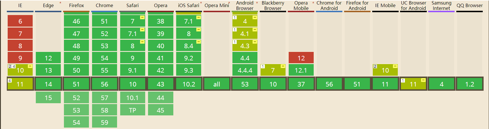二、知识剖析
1、Flex布局是什么？
Flex是Flexible Box的缩写，意为"弹性布局"，用来为盒状模型提供最大的灵活性。 任何一个容器都可以指定为Flex布局,行内元素也可以使用Flex布局。注意，设为Flex布局以后，子元素的float、clear和vertical-align属性将失效。
float属性失效2、基本概念
采用Flex布局的元素，称为Flex容器（flex container），简称"容器"。它的所有子元素自动成为容器成员，称为Flex项目（flex item），简称"项目"。
容器默认存在两根轴：水平的主轴（main axis）和垂直的交叉轴（cross axis）。主轴的开始位置（与边框的交叉点）叫做main start，结束位置叫做main end；交叉轴的开始位置叫做cross start，结束位置叫做cross end。项目默认沿主轴排列。单个项目占据的主轴空间叫做main size，占据的交叉轴空间叫做cross size。
3. 父级属性
- flex:direction 设置主轴方向,确定子元素主轴排列方式
- flex:wrap 主轴宽度不够时是否换行显示
- flex-flow 上2复合属性
- justify-content 主轴上子元素对齐方式
- align-items侧轴子元素对齐方式
- align-content 侧轴上有剩余空间时,侧轴对齐方式
4 .子级属性
- order 子元素排列顺序
- flex-shrink 子元素收缩比率
- flex-grow 子元素扩展比率
- flex-basis flex-basis属性定义了在分配多余空间之前，项目占据的主轴空间（main size）。浏览器根据这个属性，计算主轴是否有多余空间。它的默认值为auto，即项目的本来大小。
- flex 上3简写,复合属性
- align-self 允许独立的弹性子元素覆盖弹性容器的默认的侧轴对齐方式(align-items)
5. 属性详解
flex-direction
row默认值,水平方向左至右
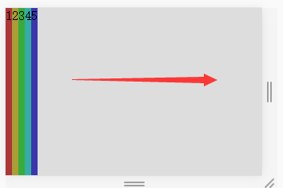row-reverse水平方向右至左

column垂直方向,上至下排列
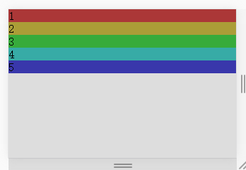ccolumn-reverse垂直方向,下至上排列
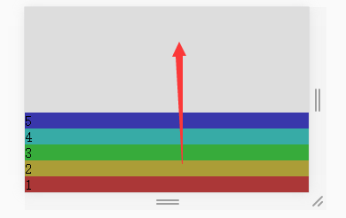demo1
flex-wrap
nowrap默认值,不换行
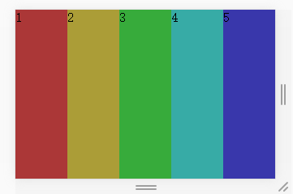wrap换行显示
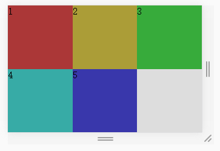wrap-reverse逆序换行显示
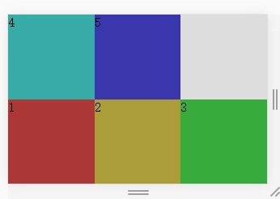demo1
justify-content
center水平居中对齐
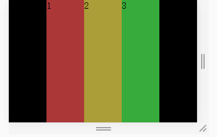flex-start水平靠左对齐

flex-end水平靠右对齐
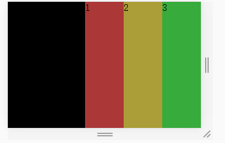space-around水平均匀分布

space-between水平两端对齐

demo1
align-items
stretch默认值，拉伸等高,占满容器高度

flex-start垂直顶部对齐

flex-end垂直底部对齐
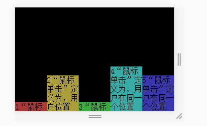center垂直居中对齐

baseline项目的第一行文字的基线对齐
 demo1
demo1
align-content
stretch默认值,拉伸,占满容器高度，项目高度由项目内容决定
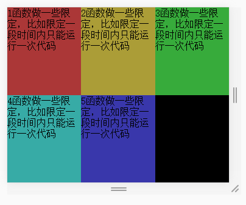flex-start垂直顶部对齐
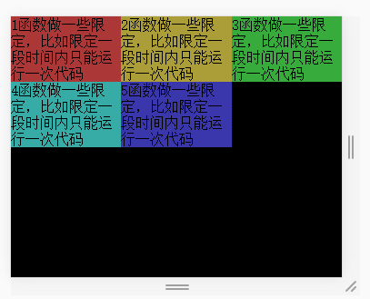flex-end垂直底部对齐
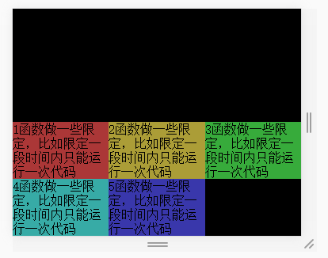center垂直居中对齐
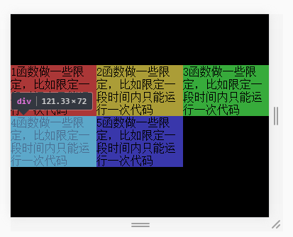space-between垂直两端对齐
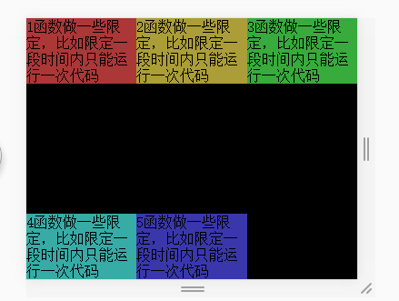space-around垂直轴均匀分布

demo1
order子元素排列顺序（默认值为0）
设置的值越小越靠前

demo1
flex-grow子元素扩展比例
剩余宽度 * 占比值/总比值
默认值为0，即如果存在剩余空间，也不放大。
如果所有项目的flex-grow属性都为1，则它们将等分剩余空间（如果有的话）。如果一个项目的flex-grow属性为2，其他项目都为1，则前者占据的剩余空间将比其他项多一倍。
盒子1设置flex-grow:1的时候单独分配剩下的所有空间
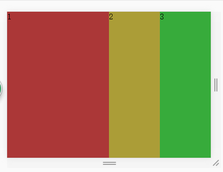demo1
flex-shrink子元素收缩比例
溢出宽度 * 占比值/总比值
默认值为1,即如果空间不足，该项目将缩小。都为1的话，均匀缩小。
如果所有项目的flex-shrink属性都为1，当空间不足时，都将等比例缩小。如果一个项目的flex-shrink属性为0，其他项目都为1，则空间不足时，前者不缩小。
父级宽度为300px,子级为100px,收缩后宽度为300*1/4=75px

demo1
flex-basis
属性定义了在分配多余空间之前，项目占据的主轴空间（main size）。浏览器根据这个属性，计算主轴是否有多余空间。它的默认值为auto，即项目的本来大小。它可以设为跟width或height属性一样的值（比如350px），则项目将占据固定空间。demo1
align-self
align-self属性允许单个项目有与其他项目不一样的对齐方式，可覆盖align-items属性。默认值为auto，表示继承父元素的align-items属性，如果没有父元素，则等同于stretch。demo1
三、常见问题
四、解决方案
设置width:100%;且overflow:hidden;
demo2五、编码实战
六、拓展思考
flex布局最常用的是什么场景？
一般实现垂直居中是一件很麻烦的事，但flex布局轻松解决
display:flex;
justify-content: center;
align-items: center;
响应式布局
demo3七、参考文献
flex实例--阮一峰的个人博客
css之flex兼容
更多讨论
既然各大主流浏览器最新版本已经支持了flexbox，那么有没有必要在代码中进行兼容写法？
flex兼容性写法
元素兼容写法
display: -webkit-box; /* 老版本语法: Safari, iOS, Android browser, older WebKit browsers. */
display: -moz-box; /* 老版本语法: Firefox (buggy) */
display: -ms-flexbox; /* 混合版本语法: IE 10 */
display: -webkit-flex; /* 新版本语法: Chrome 21+ */
display: flex; /* 新版本语法: Opera 12.1, Firefox 22+ */
元素兼容写法
-webkit-box-flex: 1 /* OLD - iOS 6-, Safari 3.1-6 */
-moz-box-flex: 1; /* OLD - Firefox 19- */
-webkit-flex: 1; /* Chrome */
-ms-flex: 1 /* IE 10 */
flex: 1; /* NEW, Spec - Opera 12.1, Firefox 20+ */
Autoprefixer
感谢观看
by 石林涛